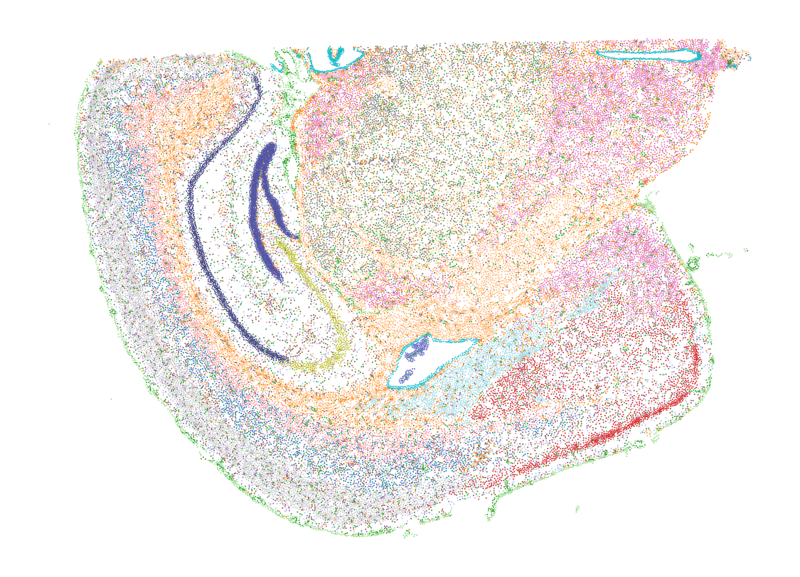

Reduce & cluster
Spatial bonus: clusters must make sense on the tissue
Data
QC
Filter
Normalize
Cluster
Markers
Expression space (UMAP)

→
Tissue space

Layers and regions appear although no coordinates were used: expression alone recovers anatomy.
Salt-and-pepper clusters spread everywhere are often glia, vessels or immune cells, or noise.
A cluster only at the edge or in the bad band is a warning sign of a technical artefact.